Capsmat
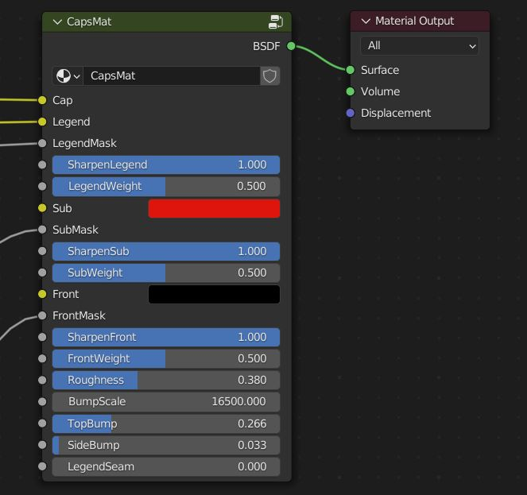
Paramètres
Cap
Il s’agit de la couleur de base de la touche, que vous pouvez contrôler via le champ de couleur ou en branchant une palette sur le socket.
Légende
Il s’agit de la couleur de la légende. Vous pouvez choisir une couleur, brancher une palette pour contrôler la couleur ou même brancher une image dans le socket pour des légendes entièrement en couleurs.
Masque de légende
Une image blanche sur noir est branchée dans ce socket pour mélanger la couleur de la touche et la couleur de la légende.
Netteté de la légende
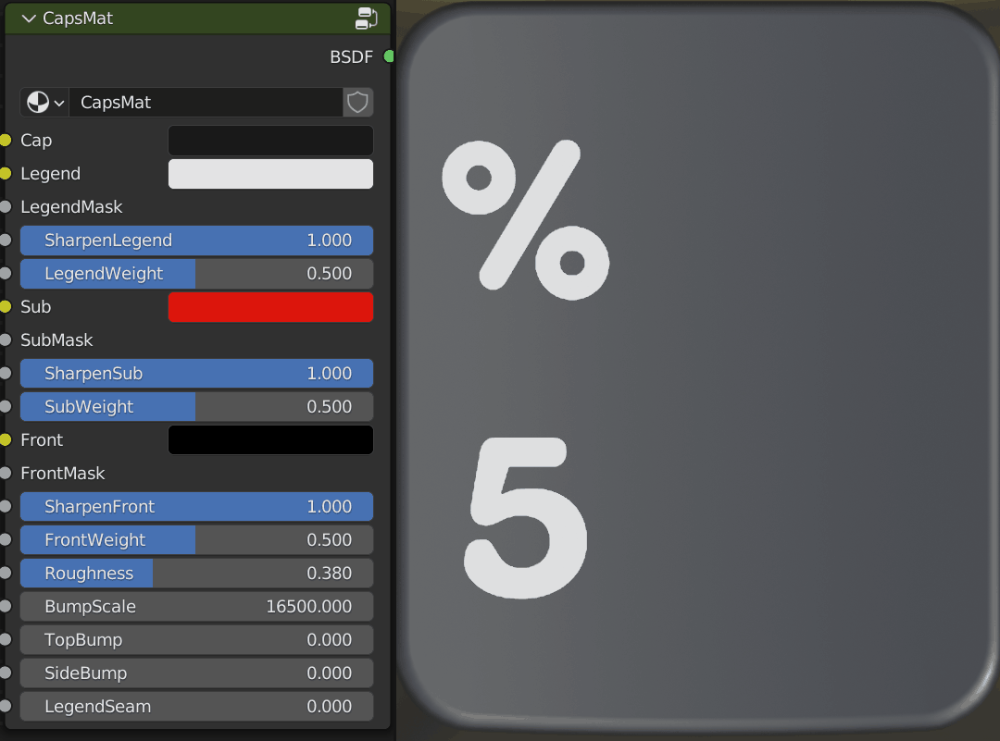
Ce paramètre accentue le bord de la légende pour qu’elle apparaisse comme une légende en double injection. Il est à fond par défaut, mais vous pouvez le réduire à zéro pour simuler davantage un aspect en sublimation thermique.
Épaisseur de la légende
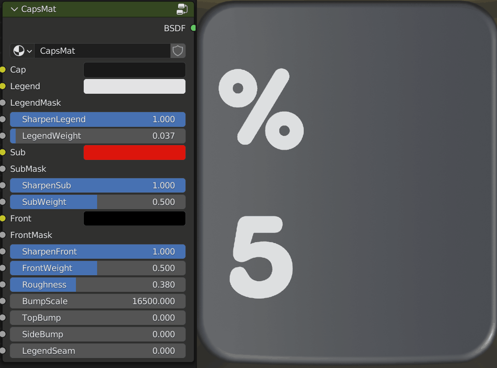
En raison du fonctionnement de la netteté de la légende, vous pouvez également souhaiter décaler l’épaisseur pour graisser la légende. Un nombre plus petit signifie une légende plus grasse.
Sub
Il s’agit de la couleur des légendes secondaires.
SubMask
Il s’agit du socket dans lequel vous pouvez brancher vos fichiers de légendes secondaires.
Netteté des sub
Comme Netteté de la légende, ce paramètre fait de même pour les légendes secondaires.
Épaisseur des sub
Identique à Épaisseur de la légende mais pour les légendes secondaires.
Front
Il s’agit de la couleur des légendes frontales.
Masque frontal
Il s’agit du socket pour le masque de légende frontale.
Netteté frontale
Identique à Netteté de la légende mais pour les légendes frontales.
Épaisseur frontale
Identique à Épaisseur de la légende mais pour les légendes frontales.
Rugosité
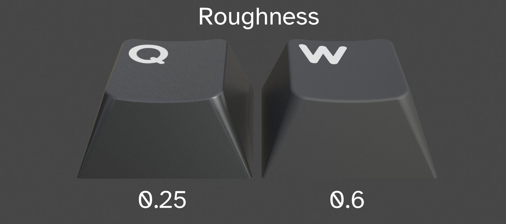
Il s’agit de la rugosité ou de la brillance globale du matériau de la touche. Cela variera selon le type de plastique ou de finition visé. Par exemple, le PBT aura généralement une rugosité plus élevée que l’ABS.
Échelle de relief
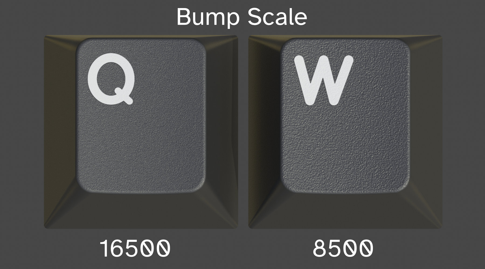
Il s’agit de l’échelle ou du grain du bruit de relief. Considérez-le comme le grain du papier de verre, un nombre plus grand représentant une densité plus élevée.
Relief du dessus
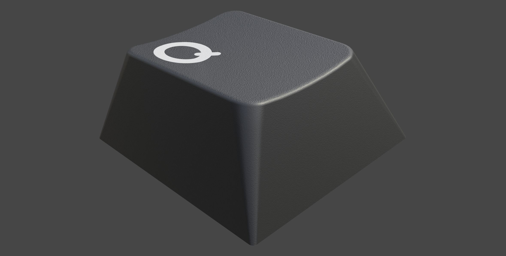
Il s’agit de l’intensité du relief sur le dessus de la touche.
Relief des côtés
Il s’agit de l’intensité du relief à l’arrière, à l’avant et sur les côtés de la touche.
Couture de la légende
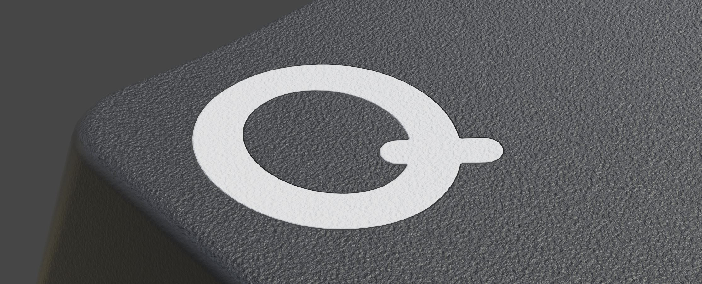
Certains procédés de double injection produisent une couture plus prononcée entre la légende et la touche.
Masques
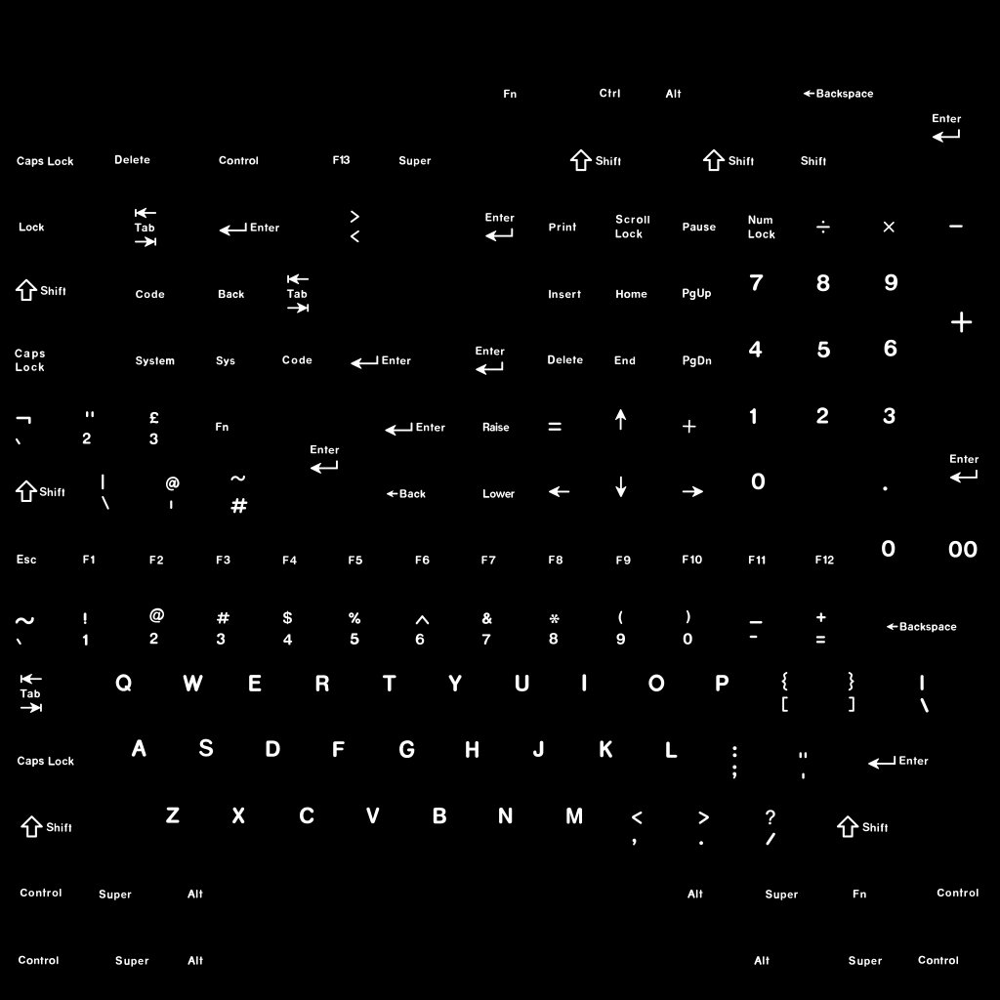
Un masque est une image blanche sur noir qui définit comment mélanger deux couleurs ou éléments ensemble. Considérez le blanc comme ACTIVÉ et le noir comme DÉSACTIVÉ.
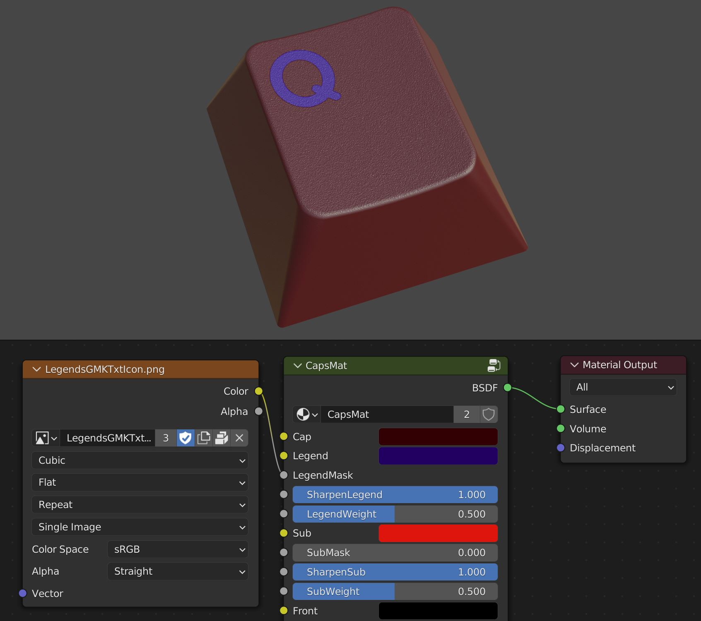
Dans le capsmat, les masques servent à mélanger la touche avec la légende, la touche avec la légende secondaire et la touche avec la légende frontale. Si l’un de ces éléments est absent, le noir ou l’état désactivé sera pris en compte pour cette portion.
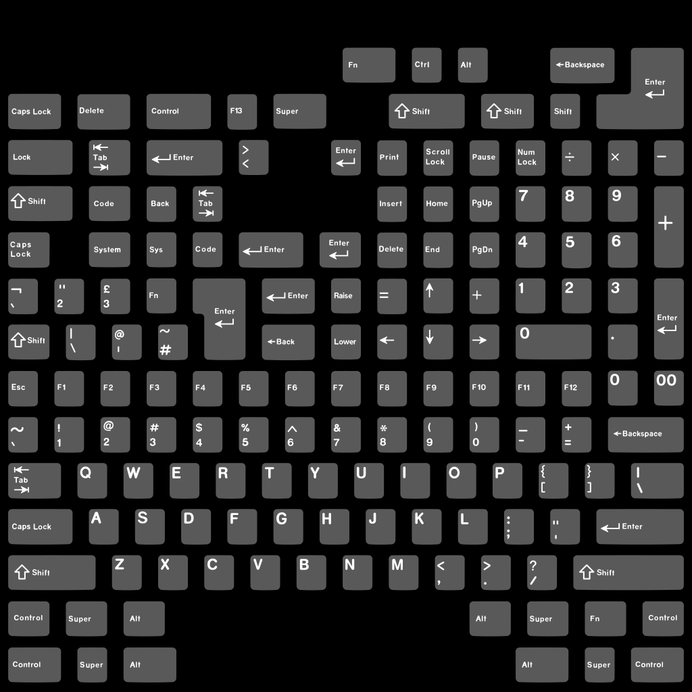
KRK est livré avec des modèles pour simplifier la génération de ces masques.
Le workflow des palettes
KRK2 introduit un nouveau workflow pour faciliter l’exploration et la conception des couleurs. Comme vous l’avez vu, le panneau KRK vous permet de contrôler la couleur des touches individuellement. Vous pouvez commencer avec une couleur personnalisée par touche, puis glisser ces couleurs dans une palette pour définir votre combinaison de couleurs. Les groupes de nœuds de palette sont l’autre composant de ce workflow.
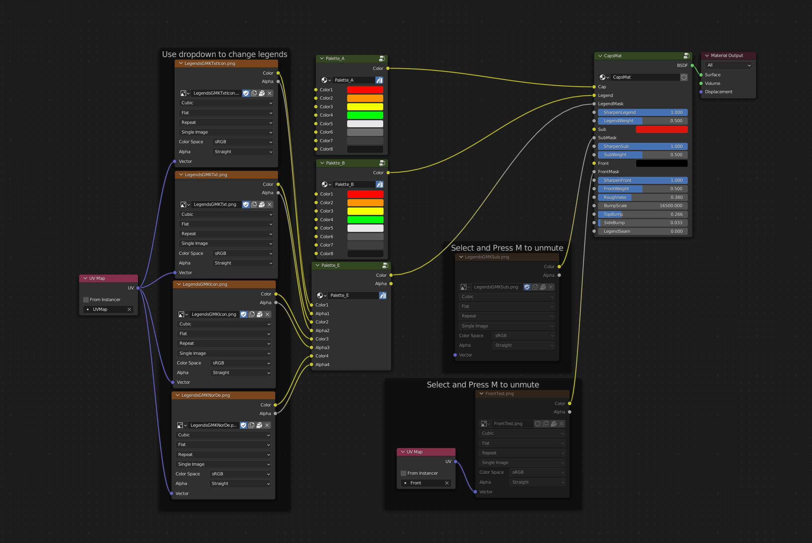
Les palettes vont de A à E, ainsi qu’une palette autonome pour le pilotage depuis l’éditeur de matériaux. Elles disposent de huit emplacements pour les couleurs, tandis que la palette E en a quatre pour la couleur et quatre autres pour les alphas.